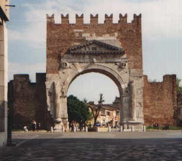
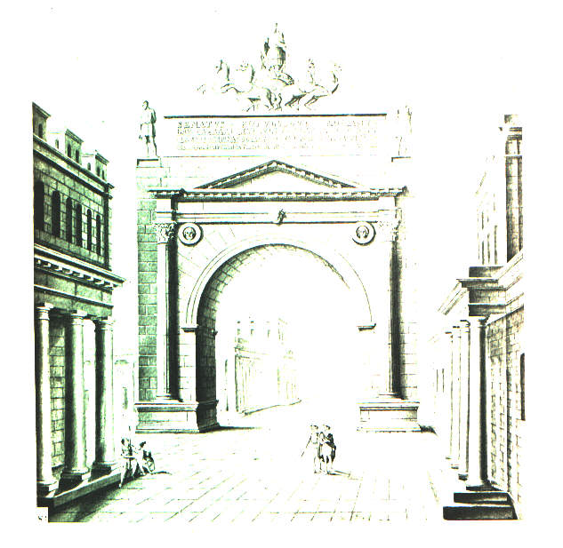
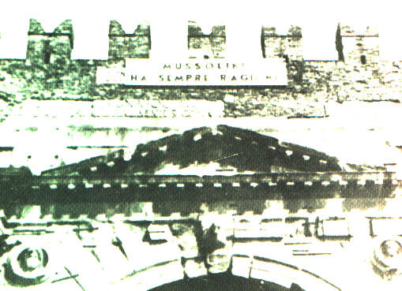

ARCO D'AUGUSTO

L'Arco d'Augusto venne eretto nel 27 a.C. in onore di Augusto, come Porta Urbica della città. Da qui parte Corso D'Augusto, il quale, nell'antica centuriazione, era il Decumano massimo.
L'Arco segnava l'inizio di una nuova città e della Via Flaminia, ed era il simbolo della Pax Augustea. La via Flaminia collegava Roma con Rimini e all'interno della città diventava via Emilia, la quale consentiva di collegare Rimini con il resto del settentrione.
Il fornice dell'Arco è largo 8.84 m, il suo spessore di 4.10 m, e l'altezza di 10.40 m.
Tra la ghiera dell'Arco ed i capitelli si possono vedere quattro clipei raffiguranti divinità.
Secondo la tradizione, sulla sommità dell'arco si dice ci fosse un quadriga marmorea guidata da Augusto.

Nel medioevo, l'Arco prese il nome di Porta Aurea e fu smantellato nella parte superiore. Sempre in quel periodo, ai lati dell'Arco, vennero costruite altre mura, mentre l'attuale merlatura risale al X secolo.
Sotto la merlaura è presente un'iscrizione che con il tempo si è in parte cancellata.
Il periodo dell'Umanesimo (1500) è stato il periodo di maggiore pericolo per la vita dell'Arco, minacciato dalle razzie di marmi di Sigismondo Malatesta, che non esitò a demolire edifici romani e medievali, per fornire del marmo alla fabbrica per la costruzione del Tempio Malatestiano.
Nel periodo del Fascismo (1937), l'Arco fu isolato per motivi di decoro, e per esaltare l'importanza di Augusto e l'ideologia imperiale romana, strettamente legata all'ideologia imperiale fascista.

L'Arco d'Augusto e il Ponte di Tiberio sono il simbolo di Rimini e vengono inclusi nel suo sigillo e nel suo stemma.
Beatrice Bertasi
Ilaria bortolotti
Silvia Toni